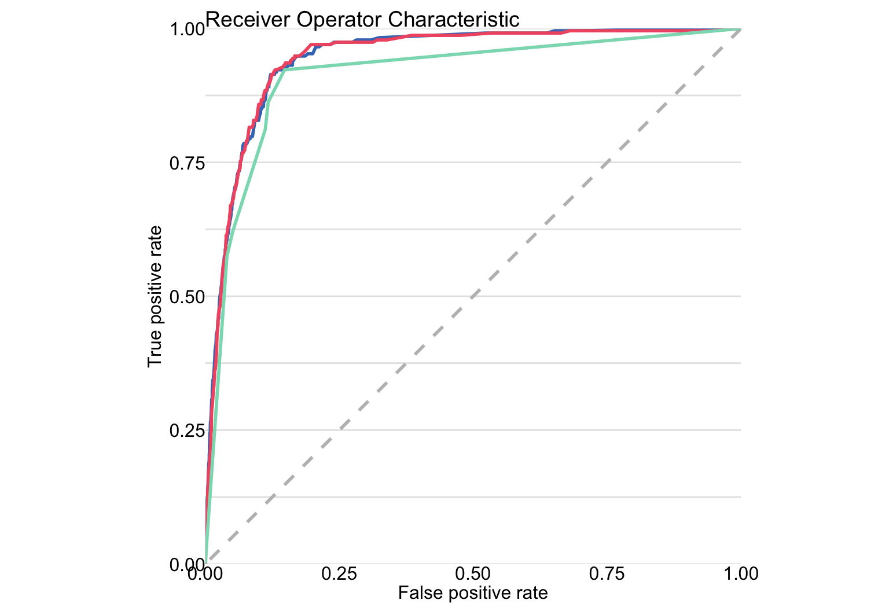
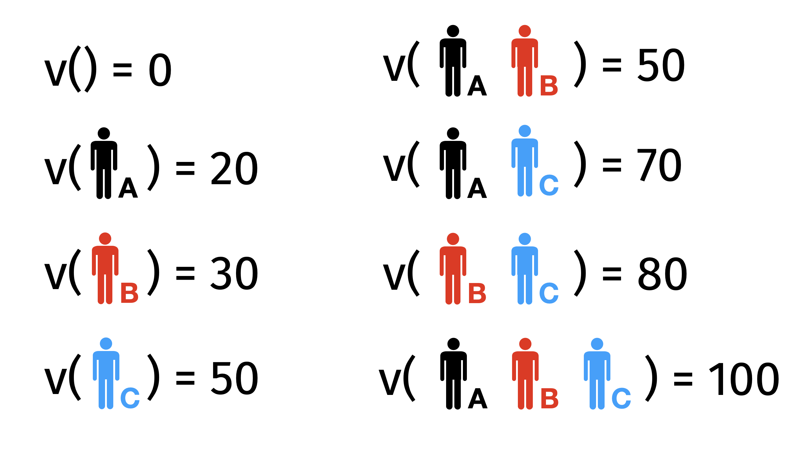
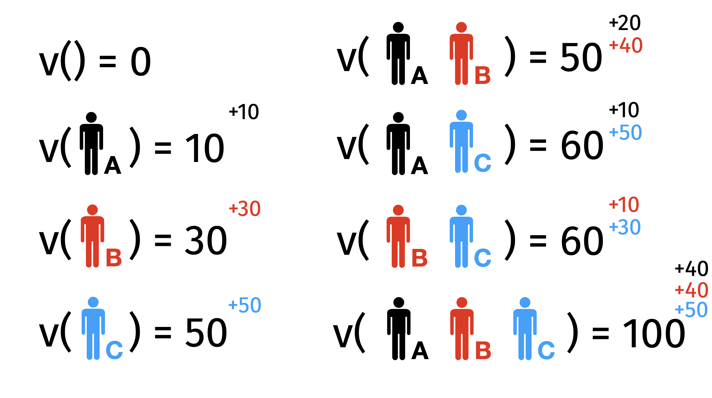
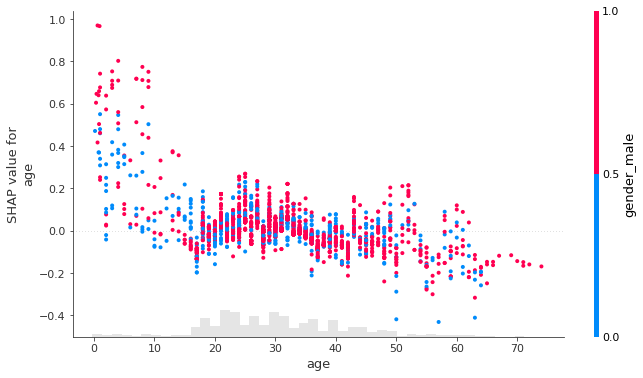

13:30 XAI pyramid - Ceteris Paribus and Partial Dependence Profile
14:30 Do it yourself !!!
15:00 Closing remarks
Why should I care? 1/5
Why should I care? 2/5
Why should I care? 3/5
Why should I care? 4/5
How do we know what the model has learned? Maybe decisions are based on some strange artifact?
This is not a made up possibility, in the example below the model’s decisions correlated strongly with the fact that there were captions in the lower left corner.
It turns out that in the learning data there was often a description in the lower left corner next to the horse pictures. Instead of learning to recognize the characteristics of horses, it is much easier to recognize the presence of text in the lower left corner.
There is tremendous potential in Machine Learning, but:
there is a growing list of examples in which, despite initial bursts of promise, ML systems did not perform as expected
good results on training data did not transfer to real-world data
systems performed in outright idiotic ways, even though they seemed to work very well during training
more and more people began to cooldown this hurra optimism and collect lists of epic failures of ML
how do we know what the model has learned? Maybe it bases decisions on some strange artifact?
at this point we could discuss various examples of spectacular failures of ML for the next two hours.
What? 1/3
IrResponsible Machine Learning:
Select a problem.
Optimize the predictive performance of a model on the test set.
Don’t test anything else.
Jump to another problem.
Responsible Machine Learning:
Select a problem.
Optimize the predictive performance of a model on the test set.
Verify that the model has not accidentally learned artifacts present in the data.
Verify that it is consistent with domain knowledge.
Monitor the model, because the future is usually different from the training data.
What? 2/3
The purpose of this tutorial is to present techniques for model exploration, visualisation and explanation. To do this we will use some interesting real-world data, train a few models on the data and then use XAI (eXplainable artificial intelligence) techniques to explore these models. Along the way, we will tackle various interesting topics such as model training, model verification, model visualisation, model comparison and exploratory model analysis.
Tools
In this tutorial we will work on three types of models, logistic regression with splines, which is implemented in the rms package, simple decision tree implemented in partykit package and random forest implemented in the ranger package.
Models will be explained and visualized with the DALEX package. Note that there are also other packages with similar functionalities, for modelling other popular choices are mlr, tidymodels and caret while for the model explanation you will find lots of interesting features in flashlight and iml.
What? 3/3
Literature extending our workshop
The comic book on Responsible Machine Learning.
English. The Hitchhiker’s Guide to Responsible Machine Learning. https://betaandbit.github.io/RML/
Portuguese (by Nuno Henriques dos Santos de Sepulveda). O Guia do Mochileiro para o Aprendizado de Máquina Responsável.
Other books related to the topic of Responsible Machine Learning.
The workshop consists of 1/3 lecture, 1/3 code examples discussed by the tutor and 1/3 computer-based exercises for participants.
It aims to present a set of methods for the exploration of complex predictive models. I assume that participants are familiar with R and have some basic knowledge of predictive models. In this workshop, we will show how to explore these models.
Feel free to interrupt me and ask questions during the workshop!
To make working with models more enjoyable, the materials are based on a true story, which we will tell with the help of a comic strips.
The problem
The life cycle of a predictive model begins with a well-defined problem. In this example, we are looking for a model that assesses the risk of death after being diagnosed covid. We don’t want to guess who will survive and who won’t. We want to construct a score that allows us to sort patients by risk of death.
Why do we need such a model? It could have many applications! Those at higher risk of death could be given more protection, such as providing them with pulse oximeters or preferentially vaccinating them.
Who? - Let’s get to know each other! 1/3
Przemysław Biecek
works at Faculty of Mathematics, Informatics, and Mechanics at University of Warsaw and Faculty of Mathematics and Information Science at Warsaw University of Technology, Poland
for 20 years worked with teams of physicians helping them analyze data and build predictive models (often very simple)
research interests include Responsible Machine Learning and eXplainable Artificial Intelligence
(also) worked in R&D teams at large and small corporations such as Samsung, IBM, Netezza, Disney, iQuor
leads the work of the MI2.AI research team, which carries out XAI related research projects (looking for collaborators)
Who? - Let’s get to know each other! 2/2
Model Development Process
The model development is an iterative process. In each iteration, new versions of the model are created and then the models are evaluated, conclusions are drawn so as to move to the next iteration.
Model Development Process in 10 steps
In this workshop we will go through the process of building a model in ten steps. We will build several candidate models so that they can be compared later using XAI techniques.
Part 1: Introduction to predictive modelling + EDA
Conception
Before we build any model, even before we touch any data we should first determine for what purpose we will build a predictive model.
It is very important to define the objective before we sit down to programming because later it is easy to get lost in setting function parameters and dealing with all these details that we need to do. It is easy to lose sight of the long-term goal.
So, first: Define the objective.
For these exercises, We have selected data on the covid pandemic. Imagine that we want to determine the order of vaccination. In this example, we want to create a predictive model that assesses individual risks because we would like to rank patients according to their risks.
To get a model that gives the best ranking we will use the AUC measure to evaluate model performance. What exactly the AUC is I’ll talk about a little later, right now the key thing is that we’re interested in ranking patients based on their risk score.
Read the data
To build a model we need good data. In Machine Learning, the word good means a large amount of representative data. Collecting representative data is not easy and often requires designing an appropriate experiment.
The best possible scenario is that one can design and run an experiment to collect the necessary data. In less comfortable situations, we look for “natural experiments,” i.e., data that have been collected for another purpose but that can be used to build a model. Here we will use the data= collected through epidemiological interviews. There will be a lot of data points and it should be fairly representative, although unfortunately it only involves symptomatic patients who are tested positive for SARS-COV-2.
For this exercise, we have prepared two sets of characteristics of patients infected with covid. It is important to note that these are not real patient data. This is simulated data, generated to have relationships consistent with real data (obtained from NIH), but the data itself is not real. Fortunately, they are sufficient for our exercise.
The data is divided into two sets covid_spring and covid_summer. The first is acquired in spring 2020 and will be used as training data while the second dataset is acquired in summer and will be used for validation. In machine learning, model validation is performed on a separate data set. This controls the risk of overfitting an elastic model to the data. If we do not have a separate set then it is generated using cross-validation, out of sample or out of time techniques.
Read the data
covid_spring corresponds to covid mortality data from spring 2020. We will use this data for model training.
covid_summer corresponds to covid mortality data from summer 2020. We will use this data for model validation.
Both datasets are available in the DALEX package (and in training materials - folder data).
library("DALEX")head(covid_spring)
Gender Age Cardiovascular.Diseases Diabetes Neurological.Diseases
1 Male 29 No No No
2 Male 50 No No No
3 Male 39 No No No
4 Male 40 No No No
5 Male 53 No No No
6 Female 36 No No No
Kidney.Diseases Cancer Hospitalization Fever Cough Weakness Death
1 No No No No No No No
2 No No No Yes Yes Yes No
3 No No No No No No No
4 No No No No No No No
5 No No No Yes Yes Yes No
6 No No No No No No No
head(covid_summer)
Gender Age Cardiovascular.Diseases Diabetes Neurological.Diseases
1 Female 57 No No No
2 Male 34 No No No
3 Male 73 No No No
4 Female 48 Yes No No
5 Male 29 No No No
6 Male 54 No No No
Kidney.Diseases Cancer Hospitalization Fever Cough Weakness Death
1 No No Yes Yes Yes No No
2 No No No No No No No
3 No No Yes No No No Yes
4 No No No Yes No No No
5 No No Yes Yes No Yes No
6 No No Yes Yes Yes No No
Part 2: Hello model!
Step 0. Hello model!
SARS-COV-2 case study
To demonstrate what responsible predictive modelling looks like, we used data obtained in collaboration with the Polish Institute of Hygiene in modelling mortality after the Covid infection. We realize that data on Coronavirus disease can evoke negative feelings. However, it is a good example of how predictive modelling can directly impact our society and how data analysis allows us to deal with complex, important and topical problems.
Figure 1: Mortality statistics as presented on the CDC website accessed on May 2021. This table shows rate ratios compared to the group 5- to 17-year-olds (selected as the reference group because it has accounted for the largest cumulative number of COVID-19 cases compared to other age groups).
In Machine Learning, the word good means a large amount of representative data. Unfortunately, collecting representative data is neither easy nor cheap and often requires designing and conducting a specific experiment.
Here we use the data collected through epidemiological interviews. The number of interviewed patients is large, so we treat this data as representative, although unfortunately, this data only involves symptomatic patients who are tested positive for SARS-COV-2. Asymptomatic cases are more likely to be young adults.
The data is divided into two sets: covid_spring and covid_summer. The first set was acquired in spring 2020 and will be used as training data, while the second dataset was acquired in the summer and will be used for validation. In machine learning, model validation is performed on a separate data set called validation data. This controls the risk of overfitting an elastic model to the training data. If we do not have a separate set, then it is generated using cross-validation, out-of-sample, out-of-time or similar data splitting techniques.
Before we start any serious modelling, it is worth looking at the data first. To do this, we will do a simple EDA. In R there are many tools to do data exploration, I value packages that support so-called table one.
All files needed to replicate the following code are available at https://github.com/BetaAndBit/RML. Download it and save in the working directory. Let’s start with reading the data.
Note that in the Covid-mortality-risk-assessment problem, we are not interested in the binary prediction survived/dead, but rather in the quality of the ranking of risk scores. Relative risks can be used to do a triage, to determine which people need a response most quickly, such as a vaccine.
Figure 2: Classical measures of performance for classification tasks - from Wikipedia
For such types of problems, instead of a contingency table, one looks at Receiver Operating Characteristic (ROC) curve, which illustrates the trade-off between the true positive rate (sensitivity) and the false positive rate (1-specificity) at different classification thresholds. The curve’s shape and the area under it (AUC-ROC) provide insights into the classifier’s discrimination ability and overall predictive accuracy.
Figure 3: Distribution of scores for the Covid model and the corresponsind ROC curve
In this problem we are interested in ranking of scores, so we will use the AUC measure (the area under the ROC curve).
There are many measures for evaluating predictive models and they are located in various R packages (ROCR, measures, mlr3measures, etc.). For simplicity, in this example, we use only the AUC measure from the DALEX package.
Model performance
Model performance
Model performance
Model performance
Model performance
Step 3. Grow a tree
There are hundreds of different methods for training machine learning models available to experienced data scientists. One of the oldest and most popular are tree-based algorithms, first introduced in the book Classification And Regression Trees and commonly called CART. Here is the general deescription for this class of algorithms.
Start with a single node (root) with a full dataset.
For a current node, find a candidate split for the data in this node. To do this, consider every possible variable, and for each variable, consider every possible cutoff (for a continuous variable) or a subset of levels (for a categorical variable). Select the split that maximizes the measure of separation (see below).
Check a stopping criteria like the minimum gain in node purity or depth of a tree. If the stopping criteria are met, then (obviously) stop. Otherwise, partition the current node into two child nodes and go to step 2 for each child node separately.
In Machine Learning, there are hundreds of algorithms available. Usually, this training boils down to finding parameters for some family of models. One of the most popular families of models is decision trees. Their great advantage is the transparency of their structure.
We will begin building the model by constructing a decision tree. We will stepwise control the complexity of the model.
In 2001, Leo Breiman proposed a new family of models, called random forests, which aggregate decisions from an ensemble of trees trained on bootstrap samples.
Random forests combine two interesting concepts. First, combining multiple weaker models produces a stronger and more stable model. Second, the more diverse the individual models, the greater the benefit of averaging them. To increase the diversity of models, Breiman used the bootstrap technique. Bootstrap is today a very widespread and powerful statistical procedure.
Figure 4: The key steps are: to generate a set of B bootstrap copies of the dataset by sampling rows with replacement. Deep trees are trained for each copy. During the prediction, the results of the individual trees are aggregated.
Decision trees are models that have low bias but high variance. In 2001, Leo Breiman proposed a new family of models, called a random forest, which averages scores from multiple decision trees trained on bootstrap samples of the data. The whole algorithm is a bit more complex but also very fascinating. You can read about it at https://tinyurl.com/RF2001. Nowadays a very popular, in a sense complementary technique for improving models is boosting, in which you reduce the model load at the expense of variance. This algorithm reduces variance at the expense of bias. Quite often it leads to a better model.
We will train a random forest with the ranger library.
At this stage we do not dig deep into the model, as we will treat it as a black box.
library("ranger")forest <-ranger(Death ~., covid_spring, probability =TRUE)forest
Ranger result
Call:
ranger(Death ~ ., covid_spring, probability = TRUE)
Type: Probability estimation
Number of trees: 500
Sample size: 10000
Number of independent variables: 7
Mtry: 2
Target node size: 10
Variable importance mode: none
Splitrule: gini
OOB prediction error (Brier s.): 0.03709589
Train classification forest - the mlr3 way
We will train a random forest with the mlr3 library. The first step is to define the prediction task. More info
── <TaskClassif> (10000x8) ─────────────────────────────────────────────────────
• Target: Death
• Target classes: Yes (positive class, 5%), No (95%)
• Properties: twoclass
• Features (7):
• fct (6): Cancer, Cardiovascular.Diseases, Diabetes, Gender,
Kidney.Diseases, Neurological.Diseases
• int (1): Age
Now we need to define the family of models in which we want to look for a solution. The random forests is specified by the classif.ranger" parameter. To find the best model in this family we use the train().
── <LearnerClassifRanger> (classif.ranger): Random Forest ──────────────────────
• Model: -
• Parameters: num.threads=1, num.trees=25
• Packages: mlr3, mlr3learners, and ranger
• Predict Types: response and [prob]
• Feature Types: logical, integer, numeric, character, factor, and ordered
• Encapsulation: none (fallback: -)
• Properties: hotstart_backward, importance, missings, multiclass, oob_error,
selected_features, twoclass, and weights
• Other settings: use_weights = 'use'
covid_ranger$train(covid_task)covid_ranger$model
Ranger result
Call:
ranger::ranger(dependent.variable.name = task$target_names, data = task$data(), probability = self$predict_type == "prob", num.threads = 1L, num.trees = 25L)
Type: Probability estimation
Number of trees: 25
Sample size: 10000
Number of independent variables: 7
Mtry: 2
Target node size: 10
Variable importance mode: none
Splitrule: gini
OOB prediction error (Brier s.): 0.03731252
Wrap the model
In R, we have many tools for creating models. The problem with them is that these tools are created by different people and return results in different structures. So in order to work uniformly with the models we need to package the model in such a way that it has a uniform interface.
Different models have different APIs.
But you need One API to Rule Them All!
The DALEX library provides a unified architecture to explore and validate models using different analytical methods.
A trained model can be turned into an explainer. Simpler functions can be used to calculate the performance of this model. But using explainers has an advantage that will be seen in all its beauty in just two pages.
Wrap the model
To work with different models uniformly, we will also wrap this one into an explainer.
Model exploration starts with an assessment of how good is the model. The DALEX::model_performance function calculates a set of the most common measures for the specified model.
Note: The explainer knows whether the model is for classification or regression, so it automatically selects the right measures. It can be overridden if needed.
The S3 generic plot function draws a graphical summary of the model performance. With the geom argument, one can determine the type of chart.
Machine Learning algorithms typically have many hyperparameters that specify a model training process. For some model families, like Support Vector Machines (SVM) or Gradient Boosting Machines (GBM), the selection of such hyperparameters has a strong impact on the performance of the final model. The process of finding good hyperparameters is commonly called tuning.
Different model families have different sets of hyperparameters. We don’t always want to optimize all of them simultaneously, so the first step is to define the hyperparameter search space. Once it is specified, then tuning is based on a looped two steps: (1) select a set of hyperparameters and (2) evaluate how good this set of hyperparameters is. These steps are repeated until some stopping criterion is met, such as the maximum number of iterations, or desired minimum model performance.
Figure 5: The hyperparameter optimization scheme implemented in the mlr3tuning package. Source: https://mlr3book.mlr-org.com/tuning.html
Machine Learning algorithms typically have many hyperparameters that determine how the model is to be trained. For models with high variance, the selection of such hyperparameters has a strong impact on the quality of the final solution. The mlr3tuning package contains procedures to automate the process of finding good hyperparameters.
For automatic hyperparameter search, it is necessary to specify a few more elements: (1) a stopping criterion, below it is the number of 10 evaluations, (2) a search strategy for the parameter space, below it is a random search, (3) a way to evaluate the performance of the proposed models, below it is the AUC determined by 5-fold cross-validation.
Automated Hyperparameter Optimisation - define the search space
In order to be able to automatically search for optimal parameters, it is first necessary to specify what is the space of possible hyperparameters.
<ParamSet(4)>
id class lower upper nlevels default value
<char> <char> <num> <num> <num> <list> <list>
1: num.trees ParamInt 50 500 451 <NoDefault[0]> [NULL]
2: max.depth ParamInt 1 10 10 <NoDefault[0]> [NULL]
3: mtry ParamInt 1 7 7 <NoDefault[0]> [NULL]
4: splitrule ParamFct NA NA 2 <NoDefault[0]> [NULL]
Automated Hyperparameter Optimisation - set-up the tuner
Popular searching strategies are random_search and grid_search. Termination is set fo a specific number of evaluations. Internal testing is based on 5-fold CV.
Automated Hyperparameter Optimisation - test your model 2/2
plot(mp_forest, mp_tree, mp_tuned, geom ="roc")

Fit logistic regression with splines
For classification problems, the first choice model is often logistic regression, which in R is implemented in the glm function. In this exercise, we will use a more extended version of logistic regression, in which transformations using splines are allowed. This will allow us to take into account also non-linear relationships between the indicated variable and the model target. Later, exploring the model, we will look at what relationship is learned by logistic regression with splines.
We will train a logistic regression with splines with the rms library. rcs stands for linear tail-restricted cubic spline function.
At this stage we do not dig deep into the model, as we will treat it as a black box.
Some models have built-in methods for the assessment of Variable importance. For linear models, one can use standardized model coefficients or p-values. For random forest one can use out-of-bag classification error. For tree boosting models, one can use gain statistics.
Several common approaches for variable selection, or for describing relationships between variables, do not necessarily capture a variable’s importance. Null hypothesis testing methods may identify a relationship, but do not describe the relationship’s strength. Similarly, checking whether a variable is included by a sparse model-fitting algorithm, such as the Lasso (Hastie et al., 2009), does not describe the extent to which the variable is relied on. Partial dependence plots (Breiman et al., 2001; Hastie et al., 2009) can be difficult to interpret if multiple variables are of interest, or if the prediction model contains interaction effects .
Another common VI procedure is to run a model-fitting algorithm twice, first on all of the data, and then again after removing X1 from the data set. The losses for the two resulting models are then compared to determine the importance, or “necessity,” of X1 (Gevrey et al., 2003). Because this measure is a function of two prediction models rather than one, it does not measure how much either individual model relies on X1.
Variable Importance - Model level analysis
The procedure described below is universal, model agnostic and does not depend on the model structure.
The procedure is based on variable perturbations in the validation data. If a variable is important in a model, then after its permutation the model predictions should be less accurate.
The permutation-based variable-importance of a variable \(i\) is the difference/ratio between the model performance for the original data and the model performance measured on data with the permutated variable \(i\)
where \(L(f, X, y)\) is the value of loss function for original data \(X\), true labels \(y\) and model \(f\), while \(X^{perm(i)}\) is dataset \(x\) with \(i\)-th variable permuted.
Which performance measure should you choose? It’s up to you. In the DALEX library, by default, RMSE is used for regression and 1-AUC for classification problems. But you can change the loss function by specifying the argument.
Choose any of the following datasets. You will work with them in the following DIY sessions
DALEX::covid_summer. The classification task with the target variable Death. Recommended. You can replicate examples from the tutorial without any change.
kmed::heart. The binary classification task with the target variable class (make it binary with 0 / non 0 split). Most code snippets should work without any change. Read more about the data at https://archive.ics.uci.edu/ml/datasets/Heart+Disease
Part 4: Variable Importance - Instance level analysis
A Unified Approach to Interpreting Model Predictions
In this course, you will learn about the main methods and tools related to XAI, but also (and this may be unique) about selected papers and researchers.
That’s why we will start this and the next classes with a brief presentation of a high-impact article from the XAI field + few words about the author of this article.
Today we are talking about Shapley values, so the article of the day will be the 2017 SHAP method article.
This article is really exceptional, it will soon exceed 10,000 citations which is an amazing achievement.
The article has several strong points, which we will talk about later today, one of which is the available software that allows you to easily use the described method
This software is a shap library, which on GitHub has skyrocketing numbers of stars and downloads
Why SHAP?
Shapley values are currently the most popular technique for model explanations (almost in each category: local, global, model agnostic, model specific…)
if you remember only one method after this course, let it be the SHAP
It has more than five years of development. In the list of major XAI methods, you can also find its various extensions like ShapleyFlow or ASV (more about them later)
We will use an XAI pyramid to present new methods during this course.
Today we will mainly talk about the method of local explanations - Shapley values, which for a single observation determines the importance of variables.
XAI pyramid
This is one of the three fundamental methods of explaining the behaviour of predictive models.
The following three panels introduce these three concepts; we will return to them in one week and two weeks.
SHAP corresponds to panel C. We try to explain the behaviour of the model by decomposing the distance between this particular prediction and the average prediction of the model.
Shapley values
Notation
We have set of \(P = \{1, ..., p\}\) players
For each coalition, i.e. subset \(S \subseteq P\) we can calculate the payout \(v(S)\) and \(v(\{\varnothing\}) = 0\)
We want to fairly distribute the payout \(v(P)\)
Optimal attribution for player \(i\in P\) will be denoted as \(\phi_i\)
Motivational example 1/3
How to divide the reward?
Three parties A, B and C took part in the election.
As a result of the election, parties A and B each have 49% representation in the parliament and party C has 2% representation.
Let’s assume that A and C formed a government.
How to fairly divide the prize (ministries)?
What share of the prize should party C have?
Note that any two parties can form a government. In that case, should the prize for C be equal to or less than that for A?
Motivational example 2/3
Students A, B and C carry out a project together. With this payoff table, determine what portion of the award each student should get.

Motivational example 2/3 cont.
Students A, B and C carry out a project together. With this payoff table, determine what portion of the award each student should get.
Motivational example 3/3
Students A, B and C carry out a project together. With this payoff table, determine what portion of the award each student should get.
Motivational example 3/3 cont.
Students A, B and C carry out a project together. With this payoff table, determine what portion of the award each student should get.

Required properties of fair payout
One can define various desirable properties of fair reward distribution. The following seem to be natural (or at least they were for Lord Shapley).
Efficiency: all contributions sum up to the final reward
\[
\sum_j \phi_j = v(P)
\]
Symmetry: if players \(i\) and \(j\) contributed in the same way to each coalition then they get the same reward
where \(\Pi\) is a set of all possible permutations of players \(P\) while \(S_j^\pi\) is a set of players that are before player \(j\) in permutation \(\pi\).
Instead of trying all \(\Pi\) permutations one can use only \(B\) random permutations to estimate \(\phi_j\)
Once you have a given set \(S_j^\pi\) of players that are before \(j\) in a permutation \(\pi\), then the added value of \(j\) is the same for all permutations that starts with \(S_j^\pi\). There is \((|P| - |S_j^\pi| - 1)!\) of such permutations.
Also the order of players in \(S_j^\pi\) does not matter as the added value of \(j\) is the same for all permutations of \(S_j^\pi\). There is \(|S_j^\pi|!\) of such orders.
Formula for Shapley values can be rewritten in a following way
Let’s start with local explanations, focused on single point \(x\) and the model prediction \(f(x)\).
Now instead of players, you can think about variables. We will distribute a reward between variables to recognize their contribution to the model prediction \(f(x)\).
Reward to be distributed among players:
\[
f(x) - E f(x)
\]
Payoff value function for coalition \(S\)
\[
v(S) = f_S(x_S) - E f(x)
\] where \(f_S(x_S)\) is the model prediction maginalized over \(P/S\) variables, i.e. \[
f_S(x_S) = \int_{X_{-S}} f(x_S, X_{-S}) dP(X_{-S})
\]
Note:\(|P|!\) grows quite fast. \(10! = 3 628 800\). Good news: instead of checking all permutations, one can focus on random \(M\) permutations. Also calculation of \(f_S(x_S)\) may be computationally heavy for large datasets. But it may be approximated on a subset of observations.
How to understand the value function
Let’s take a look at how the value function works for a set S of players using the Titanic data example and an explanation for the observations age=8, class=1st, fare=72, ….
Let’s consider the process of conditioning the distribution of data on consecutive variables. In the figure below, we start the prediction distribution for all data, this corresponds to a coalition without players.
Then we add the player age, which means conditioning the data with the condition age=8. Implementation-wise, assuming the independence of the variables, this would correspond to replacing the age value in each observation with the value 8.
Next, we add the class variable to the coalition, which means further conditioning the data with the condition class=1st. In the next step, we add fare to the coalition, and so on.
In the last step, once all the players are in the coalition, that is, all the variables, the model’s predictions will reduce to a single point \(f(x)\)
In fact, we are not interested in the distributions of conditional predictions, only in the expected value of these distributions. This is what our value function is.
The added value of variable \(j\) when added to the coalition \(S\) is the change in expected value. In the example below, adding the class variable to a coalition with the age variable increases the reward by \(0.086\).
Average of conditional contributions
The Shapley value is the average after all (or a large number) of the orders in which variables are added to the coalition.
For diagnostic purposes, on graphs, we can also highlight the distribution of added values for different coalitions to get information on how much the effect of a given variable is additive, i.e. leads to the same added value regardless of the previous composition of the coalition.
Order matters. For a model that allows interactions, it is easy to find an example of a non-additive effect of a variable. How to explain the different effects of the age variable in the figure below?
Note: For estimation, one can use an only subset of permutations from \(\Pi\) and a subset of observations \(\{1, ..., N\}\).
From local to global – Feature importance
The SHAP method gives local explanations, i.e. explanations for each single observation. But we can convert them to global explanations by aggregating the explanations for individual observations.
For example, we can assess the validity of a variable by counting the average modulus of SHAP explanations.
Such a measure of the importance of variables does not depend on the model structure and can be used to compare models.
Below is an example for the model trained for Titanic data
From local to global – Summary plot
One of the most useful statistics is a plot summarizing the distribution of Shapley values for the data for each variable.
On the OX axis are presented the Shapley values, in the rows are the variables. The color indicates whether an observation had a high or low value in that variable.
From the graph you can read which variables are important (they have a large spread of points)
You can read what is the relationship between the variable and the Shapley value, whether the color has a monotonic gradation or there are some dependencies
You can read the distribution of Shapley values
From local to global – Dependence plot
If we plot the Shapley values as functions of the value of the original variable, it is possible to see what kind of relationship exists between this variable and the average result.
This type of plots allows you to choose the transformations of the variable, and better understand the relationship between this variable and the result of the model
We can additionally color the graph depending on one more variable (in the example below, it is gender) to see if an interaction is present in the model. In this case, the attributes of the model will depend on the value of this additional variable.

Break down
Both break down and Shapley values can be calculated with a predict_parts() function.
Now (2022) it has 530 citations, which is a very high number considering it theoretical character
The paper introduced a new ALE method for model explanation but also shown consequences of unrealistic assumptions (like independence) over calculation of explanations. It leads the discussion about trade off between correctness of explanations and complexity of explanations.
XAI pyramid
Thinking about the XAI pyramid, we will go to the third level of the pyramid, level related to profile explanations.
We will focus on explanations for a single variable but all presented methods may be extended to two or more variables.
What-if?
when explaining anything, one of the most natural questions is: ,,what would happen if the input changes’’.
Note that neither LIME nor SHAP do not directly answer this question. They indicate an importance of some variables, but there is no answer of what would happen if a variable increases/decreases.
For high-dimensional models we are not able to keep track of all possible changes, but we can look towards one or two variables.
Here is an example of such local explanations. Continuous variable on the left. Categorical variable on the right.
Ceteris Paribus
Ceteris Paribus in action
Sound like a spell from Harry Potter?
Ceteris paribus is a Latin phrase, meaning ,,all other things being equal’’ or ,,all else unchanged’’, see Wikipedia.
It is a function defined for model \(f\), observation \(x\), and variable \(j\) as:
where \(x_{j|=z}\) stands for observation \(x\) with \(j\)-th coordinate replaced by value \(z\).
The Ceteris Paribus profile is a function that describes how the model response would change if \(j\)-th variable will be changed to \(z\) while values of all other variables are kept fixed at the values specified by \(x\).
In the implementation we cannot check all possible z’s, we have to meaningfully select a subset of them, we will come back to this later.
Note that CP profiles are also commonly referred as Individual Conditional Expectation (ICE) profiles. This is a common name but might be misleading if the model does not predict the expected value.
Ceteris Paribus - Many variables
No one wants to check CP profiles for all possible variables (of which there can be hundreds) but only for those in which ‘something is happening’. These variables can be identified based on amplitude of oscillations.
Ceteris Paribus - Many models
CP profile is a convenient tool for comparing models.
It can be particularly useful for comparing models from different families, e.g. tree vs. linear; flexible vs. rigid; regularised vs. interpolating edges (more on this later).
Ceteris Paribus - Pros and cons
Pros
Easy to communicate, and extendable approach to model exploration.
Graphical representation is easy to understand and explain.
CP profiles are easy to compare, as we can overlay profiles for two or more models to better understand differences between the models.
Cons
May lead to out-of-distribution problems if correlated explanatory variables are present. In this case application of the ceteris-paribus principle may lead to unrealistic settings and misleading results.
Think about prediction of an apartment’s price and correlated variables like no. rooms and surface area. You cannot change no. rooms freely keeping the surface constant.
Will not explain high-order interactions. Pairwise interactions require the use of two-dimensional CP and so on.
For models with hundreds or thousands of variables, the number of plots to inspect grow with number of variables.
Part 6: Variable profile - Model level analysis
Partial Dependence
Partial Dependence - intutition
As with other explanations, we can aggregate local explanations to get a global view of how the model works.
Ceteris Paribus averaged profile following marginal distribution of variables \(X^{-j}\).
\[
g^{PD}_{j}(z) = E_{X_{-j}} f(X_{j|=z}) .
\]
The estimation is based on the average of the CP profiles.
The computational complexity is \(N \times Z\) model evaluations, where \(N\) is the number of observations and \(Z\) is the number of points at which the CP profile is calculated (how to select these points?).
Note that, in general, the estimation of the conditional distribution \(X_{-j}|x^j=z\) can be difficult.
One of the possible approaches: divide the variable \(x_j\) into \(k\) intervals. And then estimate \(X_{-j}|x_j=z\) as the joint empirical distribution of observations \(i \in N(x_j)\), i.e. for which \(x^j\) falls into the same interval.
with \(X_1 \sim \mathcal U[0,1]\), while \(x_2=x_1\) (perfect correlation).
Then we have
\[
g^{MP}_{1}(z) = E_{X_2|x_1=z} [\hat \mu + \hat \beta_1 z + \hat \beta_2 x_2] =
\]\[
\hat \mu + \hat \beta_1 z + \hat \beta_2 E_{X_2|x_1=z} [x_2] =
\]\[
(\hat \beta_1 + \hat \beta_2) z + c
\]
Accumulated Local Effects
Accumulated Local Effects - introduction
We have solved one problem, two new problems have emerged.
As we saw in the previous example, marginal effects carry the cummulative effect of all correlated variables. But is this what we wanted?
No. We want to take correlations into account, but distil the individual contribution of the variable \(x_j\). For this we will use Accumulated Local Effects.
Accumulated Local Effects in action
The key idea behind ALE profiles is to track the local curvature of the model, which can be captured by the model derivative.
These derivatives are shifted and averaged according to the conditional distribution \(X^{-j}|X^j=z\).
They are then accumulated so as to reproduce the effect of the variable \(x_j\).
\[
g^{AL}_{j}(z) = \int_{z_0}^z \left[E_{X_{-j}|x_j=v}
\frac{\partial f(x)}{\partial x_j} \right] dv .
\] - As before, estimating the conditional distribution is difficult. We can deal with it by using a similar trick with \(k\) segments of the variable \(x_j\). - Let \(k_j(x)\) denote the interval in which the observation \(x\) is located in respect to the variable \(j\). - We will accumulate local model changes on the interval\([z^{k-1}_j, z^k_j]\).
Ceteris paribus is a Latin phrase, meaning ,,all other things being equal’’ or ,,all else unchanged’’, see Wikipedia.
It is a function defined for model \(f\), observation \(x\), and variable \(j\) as:
\[
h^{f}_{x,j}(z) = f\left(x_{j|=z}\right),
\]
where \(x_{j|=z}\) stands for observation \(x\) with \(j\)-th coordinate replaced by value \(z\).
The Ceteris Paribus profile is a function that describes how the model response would change if \(j\)-th variable will be changed to \(z\) while values of all other variables are kept fixed at the values specified by \(x\).
In the implementation we cannot check all possible z’s, we have to meaningfully select a subset of them, we will come back to this later.
Note that CP profiles are also commonly referred as Individual Conditional Expectation (ICE) profiles. This is a common name but might be misleading if the model does not predict the expected value.
Profile for a single prediction
While local variable attribution is a convenient technique for answering the question of which variables affect the prediction, the local profile analysis is a good technique for answering the question of how the model response depends on a particular variable. Or answering the question of what if…
The predict_profiles() function calculated CP profiles for a selected observation, model and vector of variables (all continuous variables by default).
CP profiles can be visualized with the generic plot() function.
Profile for many models
For technical reasons, quantitative and qualitative variables cannot be shown in a single chart. So if you want to show the importance of quality variables you need to plot them separately.
Easy to communicate, and extendable approach to model exploration.
Graphical representation is easy to understand and explain.
CP profiles are easy to compare, as we can overlay profiles for two or more models to better understand differences between the models.
Cons
May lead to out-of-distribution problems if correlated explanatory variables are present. In this case application of the ceteris-paribus principle may lead to unrealistic settings and misleading results.
Think about prediction of an apartment’s price and correlated variables like no. rooms and surface area. You cannot change no. rooms freely keeping the surface constant.
Will not explain high-order interactions. Pairwise interactions require the use of two-dimensional CP and so on.
For models with hundreds or thousands of variables, the number of plots to inspect grow with number of variables.
As with other explanations, we can aggregate local explanations to get a global view of how the model works.
Let’s average Ceteris Paribus profiles.
Partial Dependence in action
Once we know which variables are important, it is usually interesting to determine the relationship between a particular variable and the model prediction. Popular techniques for this type of Explanatory Model Analysis are Partial Dependence (PD) and Accumulated Local Effects (ALE).
The estimation is based on the average of the CP profiles.
The computational complexity is \(N \times Z\) model evaluations, where \(N\) is the number of observations and \(Z\) is the number of points at which the CP profile is calculated (how to select these points?).
Replacing \(i\)-th variable by value \(t\) can lead to very strange observations, especially when \(i\)-th variable is correlated with other variables and we ignore the correlation structure. One solution to this are Accumulated Local Effects profiles, which average over the conditional distribution.
By default, the average is calculated for all observations. But with the argument groups= one can specify a factor variable in which CP profiles will be averaged.
mgroup_forest <-model_profile(model_forest, variable_splits =list(Age =0:100), groups ="Diabetes")plot(mgroup_forest)+ggtitle("PD profiles for groups","") +ylab("") +theme(legend.position ="top")
If the model is additive, all CP profiles are parallel. But if the model has interactions, CP profiles may have different shapes for different observations. Defining the k argument allows to find and calculate the average in k segments of CP profiles.
Python snippets - partial dependence
Calculate Partial Dependence profiles for a single model
Train random forest model, tree based model and regression based models for selected data (covid_summer, heart, lung)
Choose (or create) a single observation
Calculate and plot Ceteris-paribus profiles for one model.
Compare results for different models.
Extras
Model deployment
We have made the model built for Covid data, along with the explanations described in this book, available at webpage. After two months, tens of thousands of people used it. With proper tools the deployment of such a model is not difficult.
To obtain a safe and effective model, it is necessary to perform a detailed Explanatory Model Analysis. However, we often don’t have much time for it. That is why tools that facilitate fast and automated model exploration are so useful.
One of such tools is modelStudio. It is a package that transforms an explainer into an HTML page with javascript based interaction. Such an HTML page is easy to save on a disk or share by email. The webpage has various explanations pre-calculated, so its generation may be time-consuming, but the model exploration is very fast, and the feedback loop is tight.
Generating a modelStudio for an explainer is trivially easy.
Statistical analysis of data most often assumes a great deal of knowledge about the phenomenon. Understanding the data allows to choose appropriate transformations, representations. Verification is oriented toward hypothesis testing, such as by p-values
Shift in our focus: Machine Learning
Machine learning puts a priority on optimizing the model, especially for performance. There is a lot of searching through the space of possible solutions here to find the best one
Knowledge of the phenomenon is no longer so important
Shift in our focus: Human Oriented ML?
What’s next. If model building can be easily and quickly automated, in-depth model verification will become more important
This is where models are created seamlessly according to the needs of the user, and the user can focus on decisions supported by the models
Take-home message
Why interpretability is important?
Higher trust -> higher adoption of ML solutions that will support decision making process
May be required by auditors, regulators, law
New tool for model exploration -> to gain new insights about the data/nature of some phenomenon
Gate keeping role, human can control and/or block wrong decisions when knowing key reasons behind these decisions
Debugg/improve data or models, identify wrong behavior and help to plan actions to fix it
Deeper diagnostic of models, validation against some domain knowledge, expectations or other values (like human rights -> fairness)